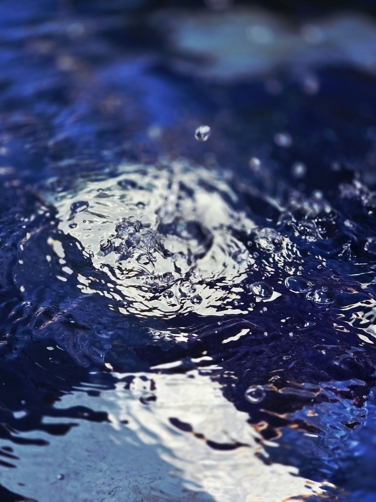

Our Story
Bliss aims to elevate bottled water from a common product to a brand that embodies quality, positivity, refreshment, and wellness.
Our goal is to give consumers trustworthy drinking water that is clean, safe, and refreshing.
Our Process

-
Sources of Water
Our water comes from a carefully chosen and authorized source that fulfills all the safety and quality requirements.
-
Quality Evaluation
Water is tested for microbiological, chemical, and safety compliance before processing and bottling.
-
Cleaning
To ensure safe, high-quality water, filtration, activated carbon treatment, reverse osmosis, and/or disinfection may be used based on the source and needs.
-
Quality Assurance
Additional quality checks are conducted on the filtered water for consistency and safety.
-
Bottling
To preserve its quality, the completed water is sealed and bottled in a sanitary, regulated setting.
-
Ready for Bliss
The bottles are labeled and packaged for distribution.